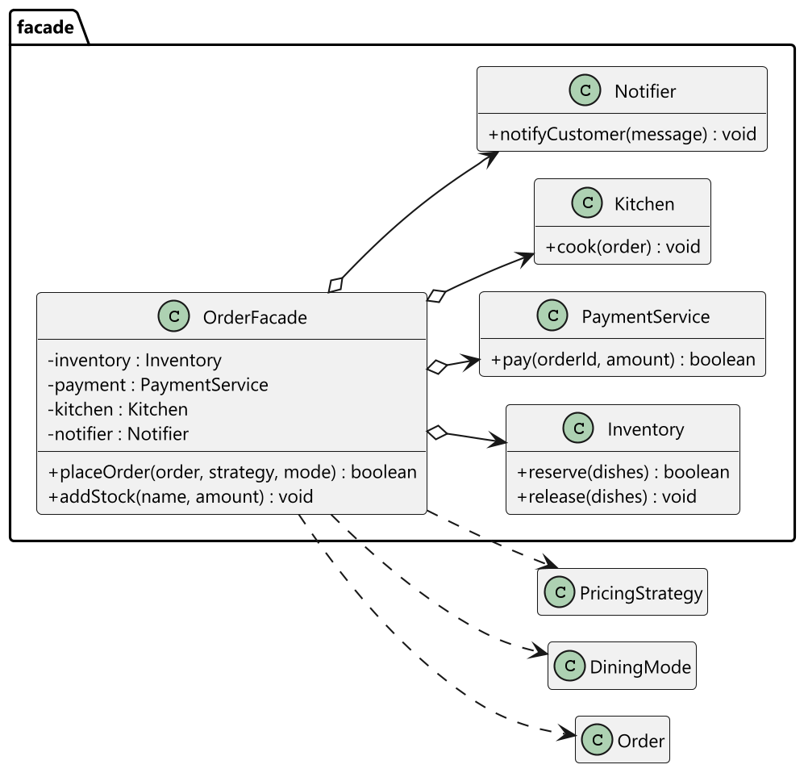
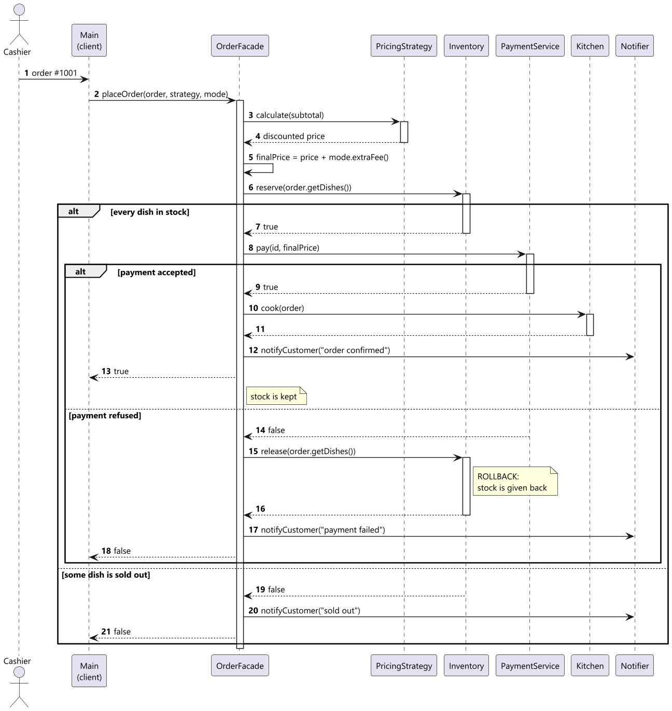
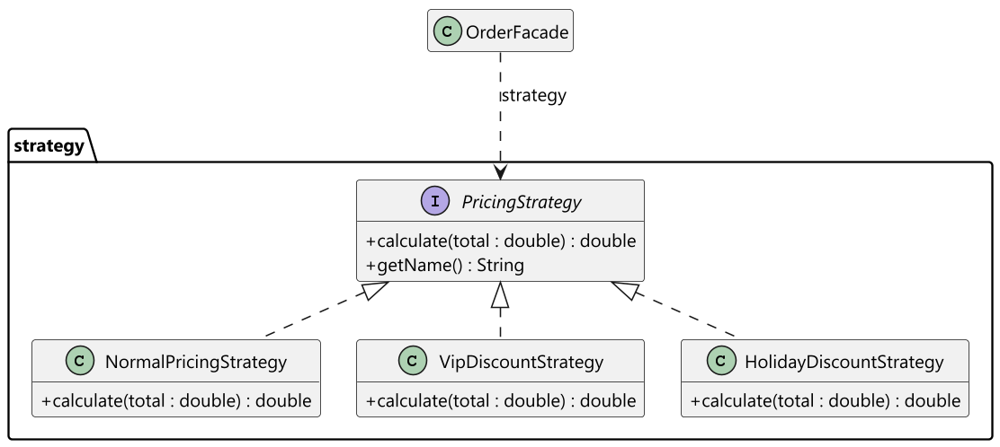
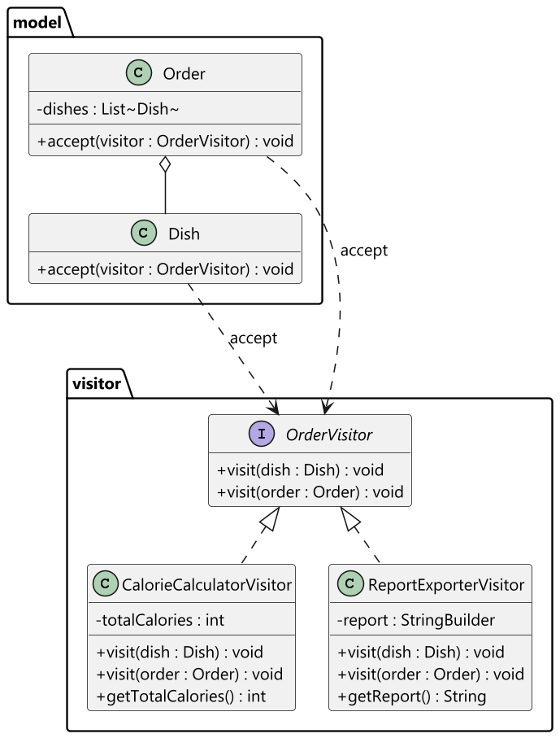
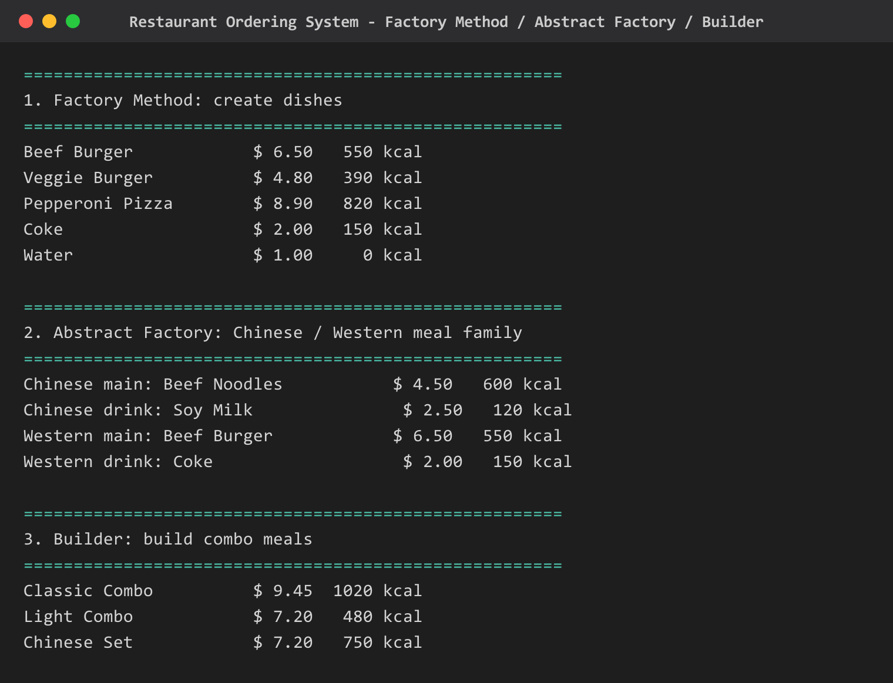
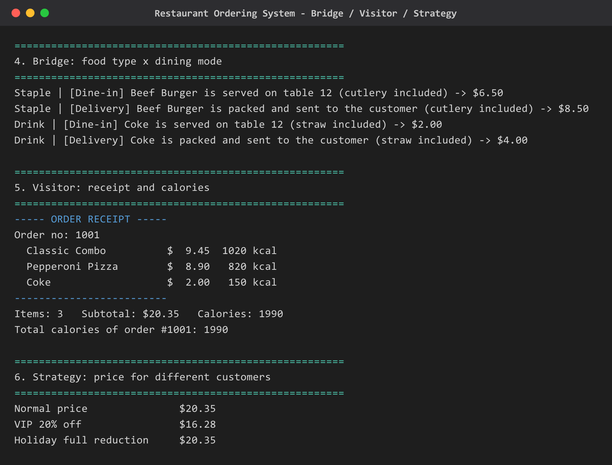
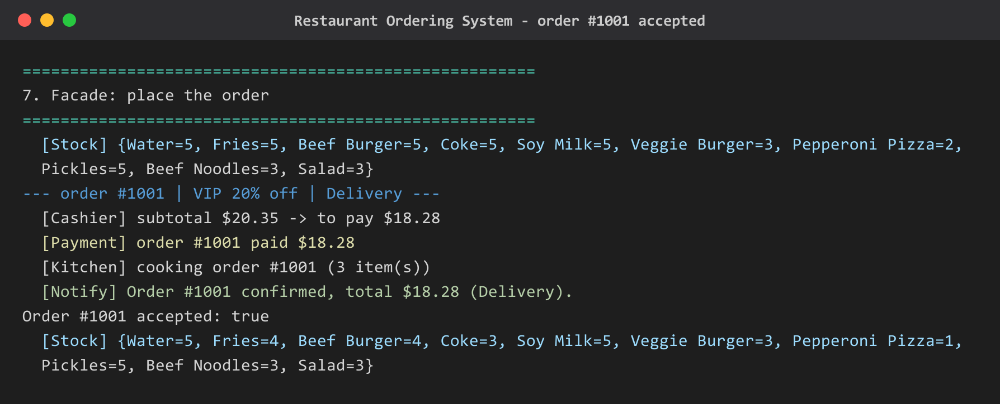
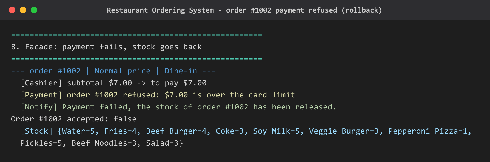

Intent. Provide a unified interface to a set of interfaces in a subsystem. The facade defines a higher level interface that makes the subsystem easier to use.
Placing an order requires four subsystems: the stock must be checked and reserved, the money must be taken, the kitchen
must start cooking, and the customer must be notified. The cashier should not call all of them in the right order and
should certainly not implement the recovery logic. OrderFacade.placeOrder() hides the sequence and also
owns the transaction boundary: when the payment is refused, the reserved dishes are released again.

OrderFacade composes four subsystems and depends on the
PricingStrategy, DiningMode and Order abstractions.public boolean placeOrder(Order order, PricingStrategy strategy, DiningMode mode) {
// 1. check and reserve the stock
if (!inventory.reserve(order.getDishes())) {
notifier.notifyCustomer("Sorry, some dishes are sold out, order #"
+ order.getId() + " is cancelled.");
return false;
}
// 2. pay (the discount is calculated by the strategy, delivery fee is added once)
double subtotal = order.getTotalPrice();
double finalPrice = strategy.calculate(subtotal) + mode.extraFee();
if (!payment.pay(order.getId(), finalPrice)) {
inventory.release(order.getDishes()); // rollback
notifier.notifyCustomer("Payment failed, the stock of order #"
+ order.getId() + " has been released.");
return false;
}
// 3. the kitchen starts cooking
kitchen.cook(order);
// 4. tell the customer
notifier.notifyCustomer("Order #" + order.getId() + " confirmed, total $"
+ String.format("%.2f", finalPrice) + " (" + mode.getName() + ").");
return true;
}
Two details of this implementation deserve attention. First, Inventory.reserve() checks all dishes
before it takes anything out of the stock, so a partially available order never leaves the stock in a half-modified
state. Second, a combo meal is stored in the stock through its parts: Inventory.expand() replaces a
ComboMeal by the dishes it contains, because the kitchen consumes the parts and not the combo.

placeOrder(). The two nested alt fragments are
the sold-out case and the two payment outcomes; the second one contains the rollback step.
Why it is used here. The client in Main needs one line to order a meal, and the recovery logic exists
in one place only. Without the facade the same eight lines of orchestration would be repeated at every call site, and a
rollback bug would have to be fixed in each of them.
Trade-off. A facade tends to grow into a god class, because every new workflow is easy to add to it. In this
project it stays small on purpose: it exposes only placeOrder() plus three setup helpers used by the demo.
Intent. Define a family of algorithms, encapsulate each one and make them interchangeable. The algorithm varies independently from the clients that use it.
Three customer types are supported: a normal customer pays the full price, a VIP member receives 20% off, and during a
holiday a full-reduction rule applies (spend 30 and save 5, spend 50 and save 10). Each rule is a separate class that
implements PricingStrategy.

public interface PricingStrategy {
/** Turn the raw order total into the price the customer has to pay. */
double calculate(double total);
String getName();
}
public class VipDiscountStrategy implements PricingStrategy {
private static final double DISCOUNT = 0.8;
@Override
public double calculate(double total) { return total * DISCOUNT; }
@Override
public String getName() { return "VIP 20% off"; }
}
Why it is used here. The facade receives the strategy as a parameter, so the pricing rule can be chosen at the
counter without changing a single line of the checkout code. The alternative — a chain of
if (customerType == ...) inside the facade — would have to be modified for every new promotion, which
violates the open/closed principle.
Trade-off. The client must know which strategy to pass. In a larger system this decision would be moved into a
small factory or a configuration table; here it is passed explicitly in Main, which keeps the example readable.
Intent. Represent an operation to be performed on the elements of an object structure. The pattern lets a new operation be defined without changing the classes of the elements on which it operates.
Two reports are needed: the total amount of calories of an order, and a printable receipt. Both are operations on the
same object structure (Order and Dish), and neither of them is a responsibility of the
entities themselves. A dish should not know how a receipt is formatted.

accept(), the two visitors implement the operations.public interface OrderVisitor {
void visit(Dish dish);
void visit(Order order);
}
public class CalorieCalculatorVisitor implements OrderVisitor {
private int totalCalories;
@Override
public void visit(Dish dish) {
totalCalories += dish.getCalories();
}
@Override
public void visit(Order order) {
totalCalories = 0;
for (Dish dish : order.getDishes()) {
dish.accept(this);
}
}
public int getTotalCalories() {
return totalCalories;
}
}
Double dispatch. The call order.accept(visitor) selects the visitor, and the call
visitor.visit(dish) selects the operation for the concrete element type. This is the mechanism that allows
ComboMeal to be handled like any other Dish: its calories are already the sum of its parts, so
the visitor needs no special case for it.
Composition of visitors. ReportExporterVisitor creates a CalorieCalculatorVisitor
internally and runs it on the same order, so the receipt contains the calorie total without duplicating the counting
logic. Visitors can therefore be combined, which is a useful point to mention at the defence.
Trade-off. Adding a new element class (for example SideDish) requires a new visit()
method in the interface and in every visitor. Visitor is the right choice when operations change often and the element
structure is stable, which is exactly the case for an order.
The patterns are not isolated examples: they exchange objects through the shared model package. Table 2
summarises the concrete connections, and the numbered list afterwards follows one complete order through the system.
| Pattern | Collaborates with | How |
|---|---|---|
| Factory Method | Builder | MealDirector asks a DishFactory for the parts of a combo |
| Abstract Factory | Builder | The cuisine family is passed to buildCustomCombo() and becomes one meal |
| Builder | model, Visitor | Produces a ComboMeal, which is a Dish and can be visited |
| Bridge | model, Facade | Wraps a dish with a dining mode; extraFee() enters the final price |
| Strategy | Facade | The discount is applied by the facade before the payment step |
| Visitor | model | Adds calories and receipt operations to Order without changing it |
| Facade | all of the above | Orchestrates stock, payment, kitchen and notification in one call |
Walkthrough of one order (the exact sequence that Main executes):
DishFactory implementations.MealDirector builds the classic combo; the abstract factory supplies a Chinese set.StapleFood and DrinkItem are combined with DineInMode or
DeliveryMode, and the bridge returns the serving text and the surcharge.Order #1001.ReportExporterVisitor prints the receipt, CalorieCalculatorVisitor counts 1990 kcal.OrderFacade.placeOrder() reserves the stock, takes 18.28 USD, starts the kitchen and notifies the customer.Main. The report contains the introduction, body, conclusion, further work, Java code, screenshots
and UML diagrams as required.
The program is a console application, therefore the screenshots show the console window produced by
java -jar target/restaurant-system-1.0.0.jar. Every section of the output is labelled with the pattern it
demonstrates, which makes the screenshots usable as evidence during the defence.




The numbers printed by the program were calculated by hand from the menu data in order to confirm that the patterns really cooperate and do not merely print plausible text.
| Value | Expected | Printed by the program |
|---|---|---|
| Classic combo (6.50 + 2.00 + 2.00) × 0.9 | 9.45 | 9.45 ✓ |
| Subtotal of order #1001 (9.45 + 8.90 + 2.00) | 20.35 | 20.35 ✓ |
| VIP price 20.35 × 0.8 | 16.28 | 16.28 ✓ |
| Final price 16.28 + delivery 2.00 | 18.28 | 18.28 ✓ |
| Calories 1020 (combo) + 820 (pizza) + 150 (coke) | 1990 kcal | 1990 kcal ✓ |
| Stock of order #1002 after a refused payment | unchanged | Veggie Burger 3, Salad 3 ✓ |
The build was also verified on a clean checkout: mvn clean package finishes without warnings and produces
target/restaurant-system-1.0.0.jar, and the jar runs with java -jar because the manifest
declares Main as the entry point. The same sources compile with plain javac, which means the
project does not depend on the build tool to be demonstrated.
The project delivers a complete restaurant ordering system in about 1,100 lines of Java and implements seven design patterns from the course. The patterns are not separate demonstrations: they form one pipeline in which the creation patterns feed the model, the Bridge and the Strategy add behaviour to an order, the Visitor produces reports and the Facade performs the checkout.
Three conclusions can be drawn from the work.
ComboMeal must extend Dish made the Builder
and the Visitor work together without any special case, and deciding that the rollback belongs to the facade kept
the subsystems independent of each other.Dish, Order, PricingStrategy and DiningMode. This is why
the composition of the whole system could be changed without rewriting it.The final result satisfies the defence requirements: seven patterns (at least six required), each implemented and demonstrably operational in one run, together with the UML diagrams, the screenshots and the source code contained in this report.
The current version deliberately stops at the console. The following improvements are ordered by the value they would add.
The Observer pattern would fit the order status naturally: the kitchen becomes the subject and the customer display and
the delivery tracker become observers, so the status change no longer needs to be pushed manually from the facade.
The Decorator pattern would model extra toppings: a CheeseDecorator or a
BaconDecorator wraps a Dish and adds both price and calories, which would extend the current
ComboMeal composition with a recursive structure.
The Inventory and the orders are kept in memory. A JDBC or SQLite repository behind the same interface would
make the state durable without touching the facade. A REST controller (Spring Boot) or a JavaFX table would replace the
console and would show that the domain layer is independent of the user interface.
The numerical results of Section 2.11 are currently verified by reading the console. JUnit 5 tests for the strategies, the builder and the rollback path of the facade would turn these observations into regression tests, and a GitHub Actions workflow would run them on every push.
If more steps are added to the checkout (loyalty points, invoices, delivery scheduling), the facade should be split into a workflow object and a set of independent services, so that it does not become the god class mentioned in Section 2.6.